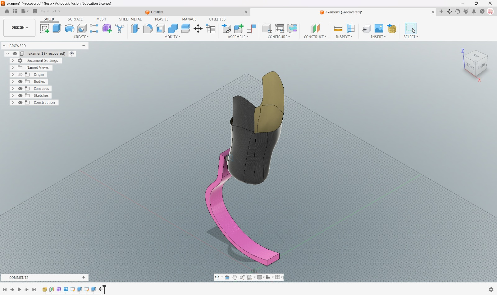
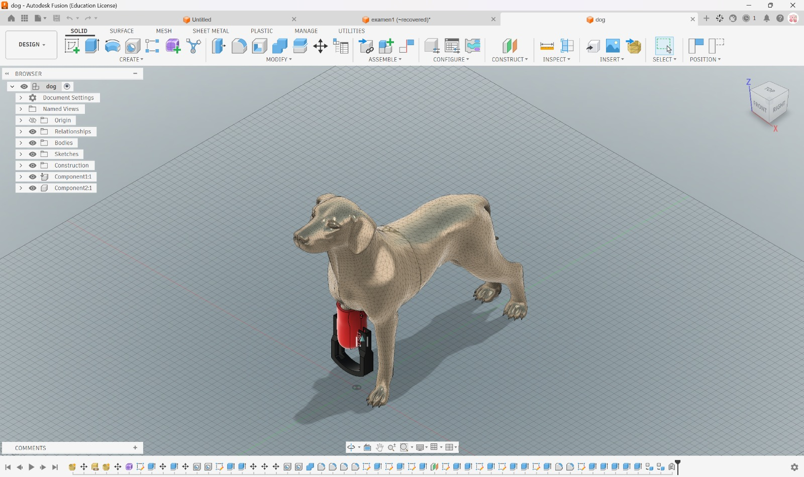
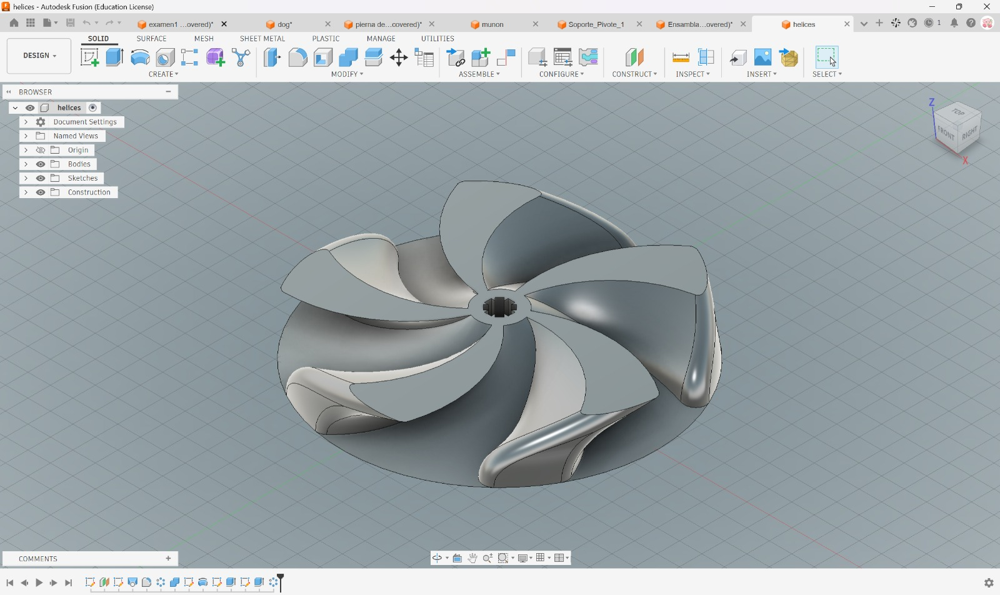

Diseño y modelado 3D de piezas ortopédicas y protésicas, enfocadas en la ergonomía y la adaptabilidad biomecánica.



Haz clic en cada categoría para ver los renders, piezas impresas y prototipos en movimiento.
Diseño y modelado 3D de piezas ortopédicas y protésicas, enfocadas en la ergonomía y la adaptabilidad biomecánica.


Modelado de componentes mecánicos para robótica y fluidos, evaluando tolerancias y geometría funcional.
